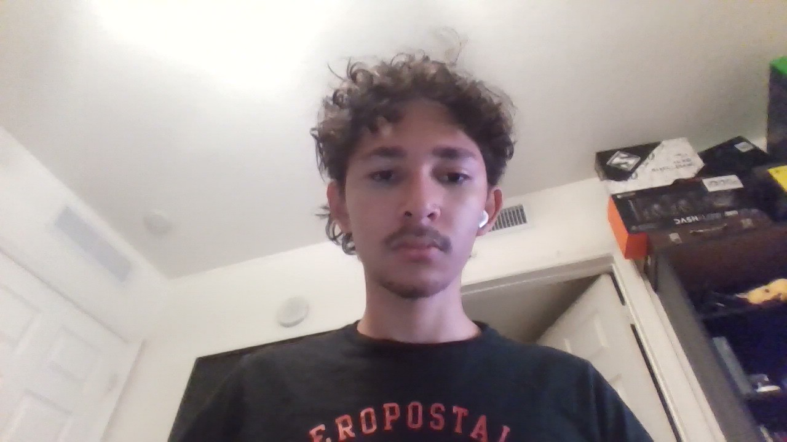

hello, I'm Emmanuel. I'm a student working on technology based projects, and this is my personal site
This website
Home made Pi server with other websites which I have to get back online some time
Other projects in the future
check out my Github profile!Status: Running
Status: in planning stage
Status: in development
Status: in progress
This is very urgent and i should probably focus more time into this 🥀
Started this project, and built this little website. kinda works right?
come back tomorrow for the update! :p